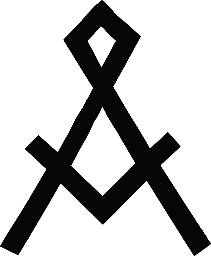

Om Kåren |

Årsta Scoutkår startades redan 1947. Vi bedriver vi ungdomsverksamhet för scouter i åldrarna 8 till 19 år. Vårt huvudsakliga mål är att ge våra yngre scouter en möjlighet att utveckla sig själva, att komma ut i skog och mark och röra på sig och på köpet få praktiska färdigheter och förståelse för hur man beter sig när man skall arbeta i grupp. De äldre scouterna har nöjet att lära ut allt det här och ge våra yngre upplevelser för livet. Och som vi säger: I scouterna lär vi för livet, inte för arbetslivet! Därmed inte sagt att scouting inte ger många bra erfarenheter som kan vara till nytta i arbetslivet. Årsta Scoutkår också aktivt för att våra aktiva ledare skall få intyg på sina insatser och färdigheter i scouting. Årsta Scoutkår tillhör Scouternas riksorganisation och är helt oberoende av politiska och religiösa organisationer. Vi har drygt 130 medlemmar, varav 70 är mellan 8 och 18 år. Kårerna runtom i landet varierar i storlek och Scouternas största kår har drygt 450 medlemmar. Inom kåren finns det olika avdelningar som är uppdelade efter scouternas åldrar. Varje avdelning är uppdelad i patruller (små grupper). En patrull består av fem till åtta medlemmar. I patrullen får scouterna träna sitt ledarskap genom att leda andra som är yngre eller lika gamla. Varje avdelning träffas en gång i veckan i vår stuga i Årsta. Årsta Scoutkår har en styrelse som träffas med jämna mellanrum (3-4 gånger per termin). På styrelsemötena diskuteras och beslutas allt från ekonomi, städdagar, lokalfrågor och andra ärenden och aktiviteter. Kåren har en kölista och ett medlemsregister som uppdateras löpande. |
Vill du lämna ett bidrag till Årsta Scoutkår? |
Ditt bidrag hjälper scouter i Årsta Scoutkår. Pengarna sätts direkt in på vårt bankgiro 5291-5097 och Årsta Scoutkårs styrelse fördelar pengarna till våra avdelningar som behöver bidraget eller till Årsta Scoutkår generella verksamhet. Du väljer själv summa. Alla bidrag är viktiga och gör skillnad! |